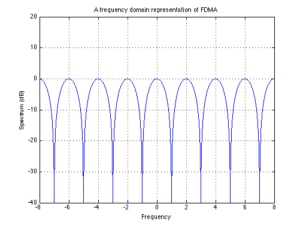

A frequency domain representation of FDMA
Copyright 2007 Telecommunications Lab
x=(-4*pi):0.01:(4*pi); y = 20*log10(abs(cos(x))); plot(x, y); set(gca,'XTick',-(4*pi):pi:(4*pi)) set(gca,'XTickLabel',{'-8','-6','-4','-2','0', '2', '4', '6', '8'}) title('A frequency domain representation of FDMA') xlabel('Frequency') axis([-(4*pi) 4*pi -40 20]) ylabel('Spectrum (dB)') grid on;